SCHOLARHUB HPU
Unified Ph.D. Research Lifecycle & Academic Governance Ecosystem
Presented to the Hon'ble Vice Chancellor, Registrar, Dean of Studies, and Top Officials
Himachal Pradesh University, Summer Hill, Shimla
Executive Context: Modernizing Ph.D. Governance at HPU
Addressing administrative bottlenecks while accelerating UGC and NAAC institutional excellence
The Legacy Challenge
Paper-Heavy & Fragmented
• Ph.D. files take weeks to travel between departmental desks and the Dean's office.
• Lack of unified digital records for coursework, RAC reviews, and DRC evaluations.
• Physical paper registers for scholar attendance prone to proxy marking and disputes.
• Difficult, frantic paper collation during NAAC inspections and NIRF ranking submissions.
The ScholarHub Vision
Zero-Paper Digital Trust
• Unified cloud monorepo connecting all departments under one official university domain.
• Transparent end-to-end doctoral lifecycle from admission to final degree award.
• Live biometric & digital attendance linked directly to monthly fellowship releases.
• One-click verifiable data extraction for statutory UGC, CAG audit, and NAAC accreditation.
Direct Leadership Impact
Control, Speed & Prestige
• Executive dashboard providing the Vice Chancellor real-time visibility across all 30+ departments.
• Complete fiscal transparency protecting university administration during government audits.
• Drastically enhances HPU's NIRF academic perception and global research collaboration.
• Empowers faculty supervisors and research scholars with transparent milestones.
The Central Gateway: Unified Digital Entrance for HPU
Connecting scholars, faculty, and administrators under one official institutional domain
The Single Front Door (scholarhubhpu.in)
The gateway acts as the central entrance to HPU's student and faculty services. It welcomes visitors with university heritage visuals and routes authorized users dynamically to their designated academic workspaces.
- ✓ Eliminates Confusion: No more scattered URLs. A single remembered domain for all Ph.D. lifecycle and attendance services.
- ✓ Unified Single Sign-On (SSO): One set of verified credentials grants access across all portal modules.
- ✓ Public Academic Research Directory: Houses the public-facing repository showcasing HPU's scholars and faculty to the world.
- ✓ Who is it for? All university stakeholders: Prospective students, Ph.D. scholars, faculty guides, Deans, and external visitors.
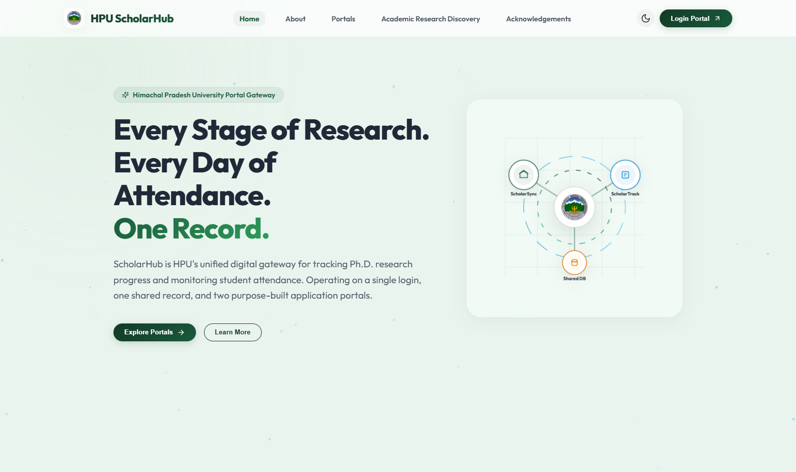
Academic Research Directory: Showcasing HPU's Intellectual Wealth
Global visibility, interdisciplinary collaborations, and elevated NIRF perception
Public-Facing Department & Scholar Directory
A live, searchable directory accessible to peer institutions, funding bodies, and prospective candidates, categorizing every department from Computer Science and Biotechnology to Law and Humanities.
- ✓ Attracts National & Global Funding: Agencies like DST, CSIR, ICSSR, and UGC can instantly locate approved labs and research expertise at HPU.
- ✓ Direct NIRF 'Perception' Boost: High digital transparency elevates university reputation among academic peers across India.
- ✓ Interdisciplinary Synergy: Enables scholars in different faculties to discover joint guides and cross-departmental projects.
- ✓ Who is it for? Global researchers, funding bodies, industry partners, prospective scholars, and NAAC assessment teams.
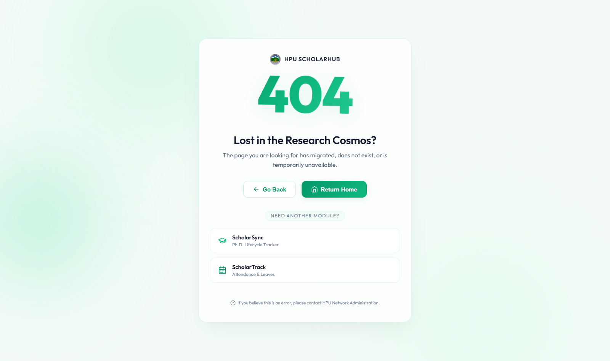
ScholarSync: Complete Ph.D. Lifecycle Tracking Engine
A digital highway from initial candidate registration to convocation degree award
End-to-End Ph.D. Lifecycle Tracker (sync.scholarhubhpu.in)
A comprehensive system designed strictly in alignment with UGC (Minimum Standards for Award of Ph.D.) Regulations. Every academic milestone is recorded digitally with immutable timestamps.
- ✓ Eliminates File Transit Delays: Replaces manual files that previously took weeks or months to move between offices.
- ✓ Automated Milestone Progression: Strict gatekeeping ensures no candidate skips coursework, RAC reviews, or plagiarism checks.
- ✓ Centralized Doctoral Vault: All synopses, RAC minutes, journal papers, and dissertations stored securely in the cloud.
- ✓ Who is it for? Ph.D. Candidates, Research Guides, DRC/RAC Members, Department HODs, Dean of Studies, and the Vice Chancellor.
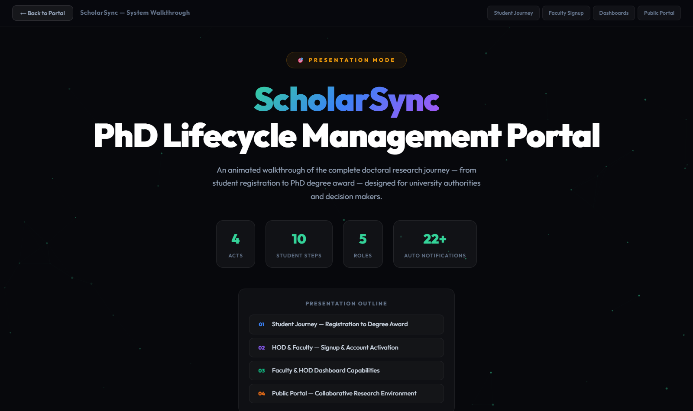
Institutional Impact: Automated NAAC & NIRF Digital Readiness
Instant extraction of verified research metrics for NAAC Criterion 3 without manual paperwork
Research Grants & Innovation Ecosystem
Extramural Funding & Patent Repository
• Catalogues all extramural research grants (DST, DBT, CSIR, ICSSR, UGC) with sanctioned budgets and PIs.
• Tracks university research laboratories and intellectual property (patents filed, published, and granted).
• Generates instant financial summaries required for NAAC self-study reports (SSR).
Ph.D. Awards per Recognized Guide
Audit-Proof Doctoral Completion Records
• Maintains an indisputable digital record of candidate registration dates, allocated guides, and completion timelines.
• Satisfies NAAC peer team requirements with verified thesis approval notifications and viva minutes.
• Zero risk of discrepancy between departmental records and central administrative data.
Scopus & UGC CARE Publications
Automated DOI & Indexing Verification
• Digital validation of scholar research papers with DOI, Scopus indexing, and UGC CARE category checking.
• Candidates cannot proceed to pre-submission without fulfilling mandatory publication thresholds.
• Direct integration with academic databases (Scopus / OpenAlex) for citation counts.
One-Click Institutional Data Export
Zero Last-Minute Administrative Panic
• Replaces months of frantic paper collation across 30+ university departments.
• Generates pre-formatted NIRF and NAAC tables ready for immediate upload to portal.
• Every metric is backed by immutable digital records, eliminating peer review objections.
Stage 1: Verified Onboarding & DRC Supervisor Allocation
Unique 9-digit SH number, coursework clearance, and transparent guide allotment
Formal Enrollment & Guide Allocation
Upon admission, each scholar is assigned a unique 9-digit SH-No. (ScholarHub ID). This ensures cross-portal synchronization across both research and attendance systems.
- ✓ Coursework Clearance: Scholar uploads coursework results; sequentially endorsed by Supervisor and approved by HOD.
- ✓ UGC Guide Quota Enforcement: Enforces guide limits (Prof: 8, Assoc: 6, Asst: 4) preventing guide overloading.
- ✓ DRC Allocation Resolution: Departmental Research Committee meeting resolutions recorded directly in the portal.
- ✓ Single-Action Verification: HOD verifies enrollment and supervisor allotment in one streamlined step.

Stage 2: Research Synopsis Clearance & Formal DRC Review
Digital submission, formal DRC meeting scheduling, and committee outcome ledger
Rigorous Research Proposal Defense
Ensures that every doctoral research problem is thoroughly vetted and documented by the Departmental Research Committee before active research begins.
- ✓ Digital Synopsis Upload: Scholar uploads research objectives, literature review, and methodology.
- ✓ Automated DRC Meeting Notices: HOD inputs date, time, and venue; portal dispatches official email notices to panel members and scholar.
- ✓ Permanent DRC Ledger: Records committee outcome (Approved, Provisional Clearance, or Revisions Required) with feedback.
- ✓ No Lost Proposals: Eliminates physical paperwork delays between departments and Dean's office.
Stage 3: Mandatory 6-Month RAC Progress Monitoring
Eliminating dormant candidacies through continuous, verified academic tracking
Periodic Research Advisory Committee Oversight
Under UGC mandates, every Ph.D. scholar must undergo a formal 6-month progress evaluation by their Research Advisory Committee (RAC). ScholarSync digitizes this completely.
- ✓ Semestral Progress Uploads: Scholars submit structured reports detailing experimental results, chapters written, and conferences attended.
- ✓ RAC Evaluation & Remarks: Committee members record meeting minutes, performance ratings, and directional feedback online.
- ✓ Early Warning Alerts: Automatically flags lagging or inactive scholars so supervisors can intervene constructively.
- ✓ Audit-Proof Progress Trail: Creates an indisputable record proving active, continuous research before thesis submission.
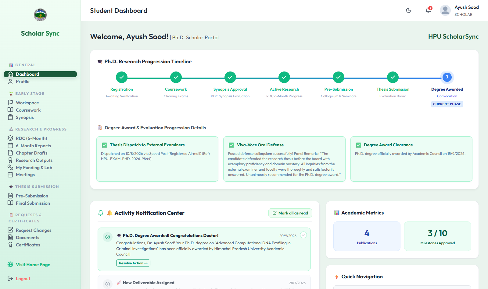
Stage 4: Research Publications, Patents & Extramural Grants
Validated intellectual property bank and research funding repository
Capturing HPU's Scholarly Output
Maintains an institutional repository of all research publications, conference proceedings, patents, and externally funded projects affiliated with Himachal Pradesh University.
- ✓ UGC Publication Gatekeeping: Automatically verifies mandatory publication thresholds (Scopus / UGC CARE) before pre-submission is unlocked.
- ✓ Automated DOI & Metadata Fetch: Instant retrieval of paper title, journal impact factor, citations, and authors via OpenAlex.
- ✓ Extramural Grants Management: Tracks sanctioned project funds (DST, DBT, UGC), project PIs, and utilization records.
- ✓ Patent Registry: Centralized university record of intellectual property filed or granted.
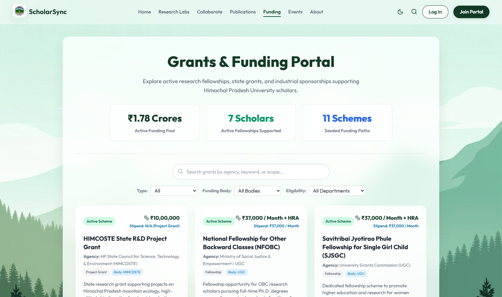
Stage 5: Pre-Submission Colloquium & Plagiarism Screening
Guaranteed academic integrity before final bound dissertation production
Strict Pre-Submission Integrity Protocols
Ensures that no dissertation is bound or dispatched without formal departmental presentation, rigorous plagiarism screening, and verified supervisor clearance.
- ✓ Plagiarism Verification: Digital upload of official Turnitin/Urkund plagiarism similarity report (<10% similarity).
- ✓ Pre-Submission Colloquium: HOD schedules departmental presentation open to faculty and research scholars.
- ✓ Formal Clearance Recording: Committee records evaluation outcome ('Cleared' or 'Uncleared with Corrections').
- ✓ Binding Thesis Lock: Final bound thesis upload is locked by code until pre-submission clearance is formally registered.
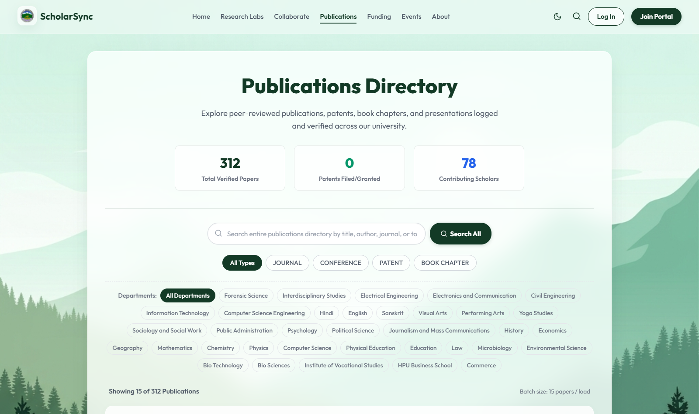
Stage 6: External Dispatch, Viva-Voce Defense & Degree Award
Complete evaluation tracking to the final conferment of the Ph.D. degree
Transparent Path to Convocation
Eliminates the traditional mystery around thesis evaluation by tracking every step from external examiner dispatch to the final oral defense.
- ✓ Supervisor & HOD Digital Sign-Off: Bound thesis verified by guide and departmental chair.
- ✓ External Examiner Dispatch Logs: Tracks confidential examiner dispatch numbers, eliminating 'lost in transit' claims.
- ✓ Viva-Voce Scheduling: Positive reports unlock oral defense scheduling with automated committee notices.
- ✓ Official Degree Conferment: Successful defense automatically generates degree award recommendation to Academic Council.
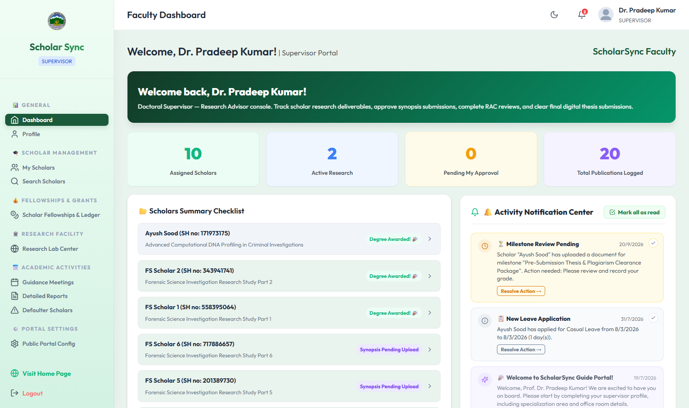
Role-Based Leadership: Supervisor & HOD Command Centers
Tailored interfaces for faculty supervisors, department chairs, and university deans
Live candidate roster, pending coursework verifications, 6-month RAC review uploads, thesis draft feedback, and sign-offs.
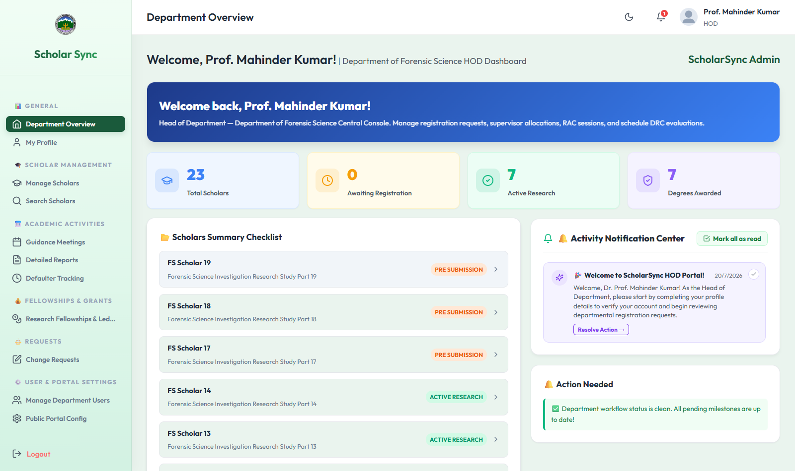
Department-wide candidate tracking, DRC meeting scheduling, guide re-allocation / global transfers, and degree award conferment.
ScholarTrack: Integrated Attendance & Leave Engine
Digital attendance, transparent leave balances, and automated UGC 75% rule enforcement
Academic Presence & Leave Engine (track.scholarhubhpu.in)
An institutional attendance platform connecting students, research scholars, teaching faculty, and department heads. It shares the same central database as ScholarSync for seamless user role resolution.
- ✓ Enforces UGC 75% Mandatory Attendance: Replaces physical registers with verified digital records for exam eligibility.
- ✓ Fellowship Disbursement Assurance: Generates certified monthly attendance sheets required for releasing stipends.
- ✓ Multi-Tier Paperless Leave: Students apply online; guides recommend; HODs approve with automatic balance updates.
- ✓ Who is it for? Ph.D. Scholars, PG Students, Course Instructors, HODs, Dean of Studies, and Finance/Accounts branch.
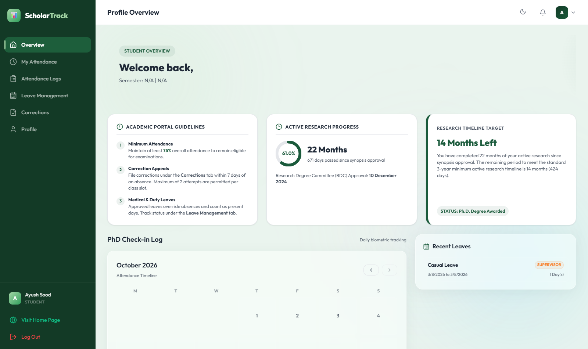
University Benefit: Fiscal Integrity & Fellowship Compliance
Audit-proof attendance certification for JRF, SRF, NFSC, and state research fellowships
CAG & State Audit Protection
Statutory ComplianceGovernment auditors strictly demand physical attendance logs before admitting fellowship expenditures. ScholarTrack provides immutable, timestamped monthly digital attendance extracts for every disbursed rupee.
Zero Ghost Scholars
Fellowship VerificationPrevents unauthorized stipend disbursements to candidates absent without approved leave. Finance office receives certified attendance sheets directly from HOD dashboards, stopping fraudulent claims.
Dispute-Free Governance
Total TransparencyLive attendance percentage meters and transparent leave balance ledgers eliminate end-of-semester arguments regarding examination detention, hall ticket denial, and stipend deductions.
Feature 1: Daily Attendance Logs & Real-Time Percentage Tracking
Live circular percentage gauges and historical subject-wise attendance logs
Real-Time Attendance Health at a Glance
Replaces manual paper rolls with dynamic digital tracking. Students and scholars can inspect their attendance health at any moment from their laptop or mobile phone.
- ✓ Visual Percentage Gauge: Circular progress ring clearly shows current standing against the mandatory 75% cutoff.
- ✓ Detailed Session Ledger: Records date, time, subject, marked status (Present, Absent, Duty Leave), and session instructor.
- ✓ Zero End-of-Term Shocks: Students know their attendance status on any given day without having to request manual records.
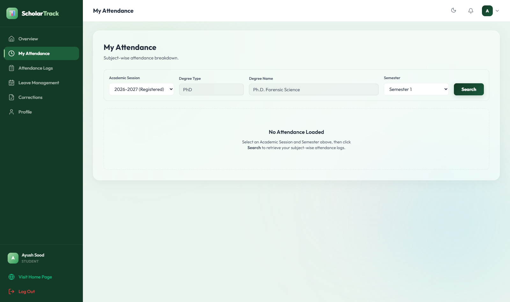
Feature 2: Multi-Tier Paperless Leave Management
Transparent leave quotas, supporting document uploads, and multi-tier approval chains
End-to-End Digital Leave Administration
Eliminates physical leave slips. Provides an auditable digital chain for Casual Leave, Duty Leave (field surveys, conferences), and Medical Leave.
- ✓ Digital Document Upload: Medical certificates or conference invitations attached directly to the application.
- ✓ Two-Tier Approval Workflow: Candidate submits -> Supervisor recommends -> HOD grants final approval.
- ✓ Live Balance Accounting: Approved leaves automatically deduct from the candidate's quota ledger and adjust attendance logs.
- ✓ Transactional Email Notifications: Instant confirmation emails sent to scholar upon approval or rejection with remarks.
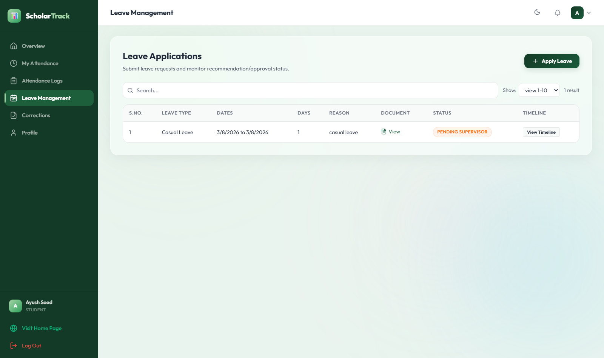
Feature 3: Defaulter Risk Engine & Automated Detention Alerts
Algorithmic identification of at-risk candidates (<75%) and legally defensible exam holds
Proactive Academic Standards Enforcement
An automated engine constantly scans attendance data across all courses, detecting students in the critical zone (<75% and <65%) well before examinations start.
- ✓ HOD & Dean Drill-Down: Department chairs can review attendance logs, missed lectures, and leave exemptions with one click.
- ✓ Legally Defensible Examination Holds: Removes subjective bias; detention lists are backed by immutable mathematical records.
- ✓ Early Warning Alerts: Students receive proactive warning notices weeks in advance to recover their attendance.
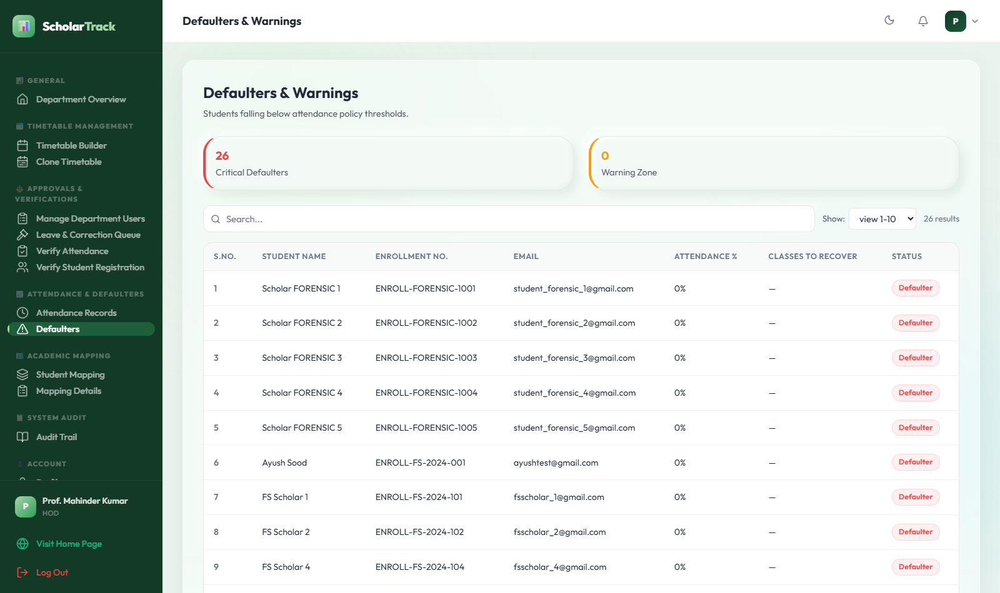
Operational Controls: Attendance Corrections & Policy Engine
Correction workflows, subject-semester mapping, and institutional holiday policy controls
Fine-Grained Institutional Flexibility
Ensures the portal adapts to real-world university operations, special circumstances, and departmental academic calendars.
- ✓ Attendance Correction Workflow: If a student misses punching due to university assignment, they request correction with written justification; approved by faculty & HOD.
- ✓ Subject-Semester Mapping: Seamlessly links batches, subjects, faculty teachers, and lecture hours.
- ✓ Master Holiday & Session Rules: Central admin sets university holiday calendars, academic session dates, and leave rules.
- ✓ Audit Logging: Every punch adjustment is stamped with user ID, IP address, and date for security.
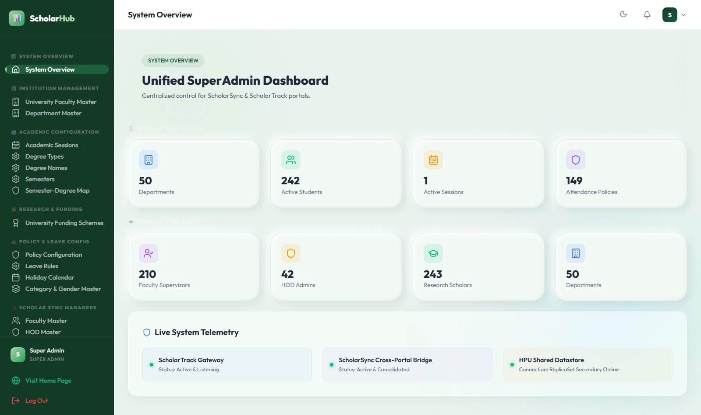
Technology Advantage: Lightweight, High-Speed MERN Monorepo
Engineered for lightning performance, institutional reliability, and zero costly hardware
Zero ERP Bloatware
React (Vite) + Express ArchitectureBuilt using modern React Single Page Application (SPA) with Vite. Pages load in under 0.8s even on slow internet connections in hilly areas, unlike heavy proprietary ERPs that crash under peak semester loads.
Unified Database
Durable MongoDB MonorepoA single, robust database powers Gateway, ScholarSync, and ScholarTrack. Candidate records, credentials, and 9-digit SH-numbers are shared seamlessly across modules without redundant data entry or desynchronization.
Bank-Grade Security
JWT Authentication & SSL HTTPSSecure JWT session tokens with bcrypt-salted encryption. Strict role-based access control (RBAC) separates scholar, supervisor, and HOD privileges with end-to-end HTTPS SSL on all university subdomains.
Mobile Accessibility: Progressive Web Apps (PWA) on Any Phone
Installable native experience on Android and iOS without app store friction
Zero App Store Installation Friction
Both ScholarSync and ScholarTrack are Progressive Web Apps (PWAs). Users tap "Install App" directly in their phone browser to add a native icon to their home screen.
- ✓ Ultra-Lightweight (<2MB): Does not consume phone storage. Perfect for students and busy professors.
- ✓ Optimized for Hilly Mountain Connectivity: Service workers cache crucial profile and attendance data for offline review during intermittent signals.
- ✓ Universal Compatibility: Works seamlessly across Android, iPhone, iPad, tablets, and Windows/Mac laptops.
- ✓ No App Store Delays: University updates deploy instantly to all users without waiting for Apple or Google approval.
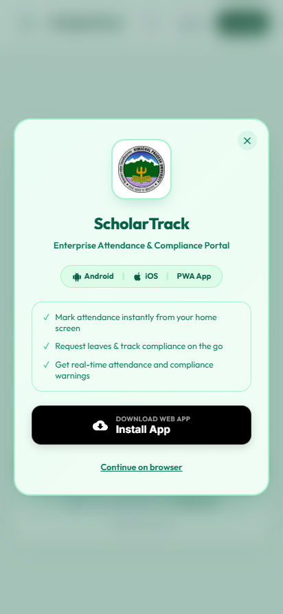
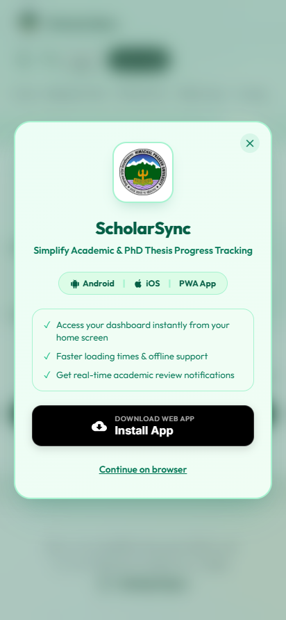
Enterprise Communications: Self-Hosted Stalwart SMTP Server
Dedicated institutional email server, durable queues, and real-time delivery tracking
Dedicated Institutional Mail Engine (admin@scholarhubhpu.in)
ScholarHub operates its own dedicated high-throughput Stalwart SMTP server, completely independent of costly third-party email APIs.
- ✓ Durable MongoDB Queue: Outgoing emails are queued via an EmailQueue collection and processed steadily by background workers with retry logic.
- ✓ Catalog of 39+ Trigger Events: Automated instant emails for DRC schedules, RAC reminders, leave approvals, supervisor allocations, and degree awards.
- ✓ Delivery Audit Logs: Admin dashboard tracks delivery timestamps, recipient logs, and diagnostics for 100% accountability.
- ✓ Branded HPU Templates: Professional emails styled with university colors and direct action buttons.
Transformation Summary: Before vs. After ScholarHub at HPU
Clear institutional comparison across administrative efficiency, compliance, and governance
❌ BEFORE SCHOLARHUB (Legacy Operations)
- ✕ Ph.D. files take weeks to travel between departmental desks and dean's office.
- ✕ Missing research synopses, handwritten RAC reviews, and untracked coursework.
- ✕ Paper registers for scholar attendance prone to proxy marking and disputes.
- ✕ Stipend disbursements vulnerable to statutory audit objections due to lack of proof.
- ✕ Frantic, months-long paper collation before NAAC peer team and NIRF rankings.
- ✕ No public visibility into HPU faculty research thrusts and active laboratories.
✅ AFTER SCHOLARHUB (Modern Digital Governance)
- ✓ Instant digital lifecycle forwarding with timestamped supervisor & HOD sign-offs.
- ✓ Structured digital records for every milestone: DRC, RAC, Turnitin, & Viva-Voce.
- ✓ Verified digital/biometric daily attendance with real-time 75% percentage gauge.
- ✓ 100% audit-proof fellowship certificates for Accounts & Finance branch.
- ✓ One-click NAAC Criterion 3 & NIRF metrics export with verified proof links.
- ✓ Prestigious Public Academic Research Directory showcasing HPU globally.
Institutional Implementation & Phased Rollout Roadmap
A seamless, non-disruptive 3-phase rollout strategy for Himachal Pradesh University
Phase 1: Pilot Launch
Weeks 1 – 4 • 3 Flagship Departments
• Deploy pilot in 3 leading departments (e.g. Computer Science, Biotechnology, Physics).
• Onboard active Ph.D. scholars and faculty guides.
• Conduct brief 30-minute orientation workshops for HODs and faculty.
• Verify live attendance logging and leave management workflows.
Phase 2: Campus Rollout
Weeks 5 – 8 • University-Wide Expansion
• Expand onboarding to Humanities, Social Sciences, Law, and Sciences.
• Automatically backfill all existing scholars with unique 9-digit SH numbers.
• Configure departmental holiday calendars and subject mappings.
• Distribute PWA mobile app install links across student notice boards.
Phase 3: Paperless Sync
Weeks 9+ • Complete Governance Integration
• Mandate digital DRC and RAC meeting recording across all departments.
• Electronic synchronization with Finance office for monthly stipend release.
• Automated NAAC Criterion 3 data compilation for upcoming accreditation.
• Complete operational transition to modern paperless research administration.
Thank You, Hon'ble Vice Chancellor & University Officers
ScholarHub is Ready for Immediate Institutional Pilot at H.P. University
Open for Leadership Questions, Feedback & Next Steps